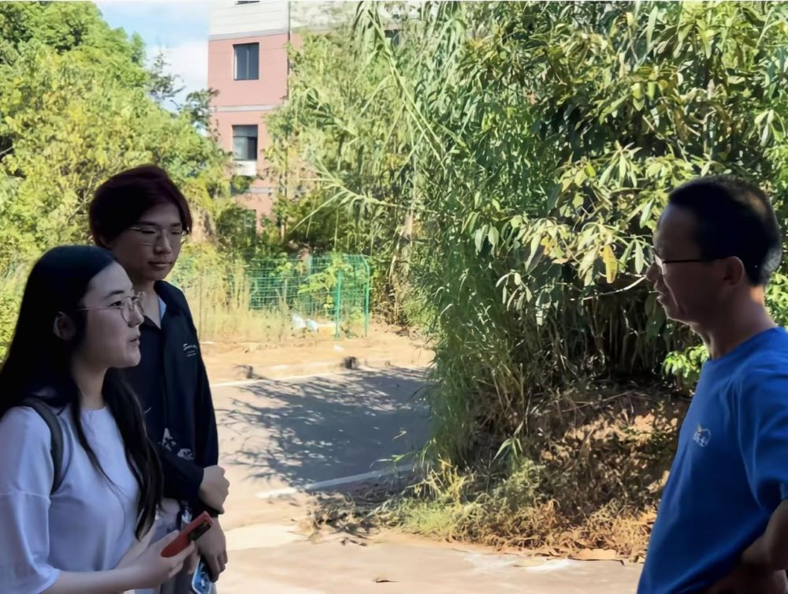
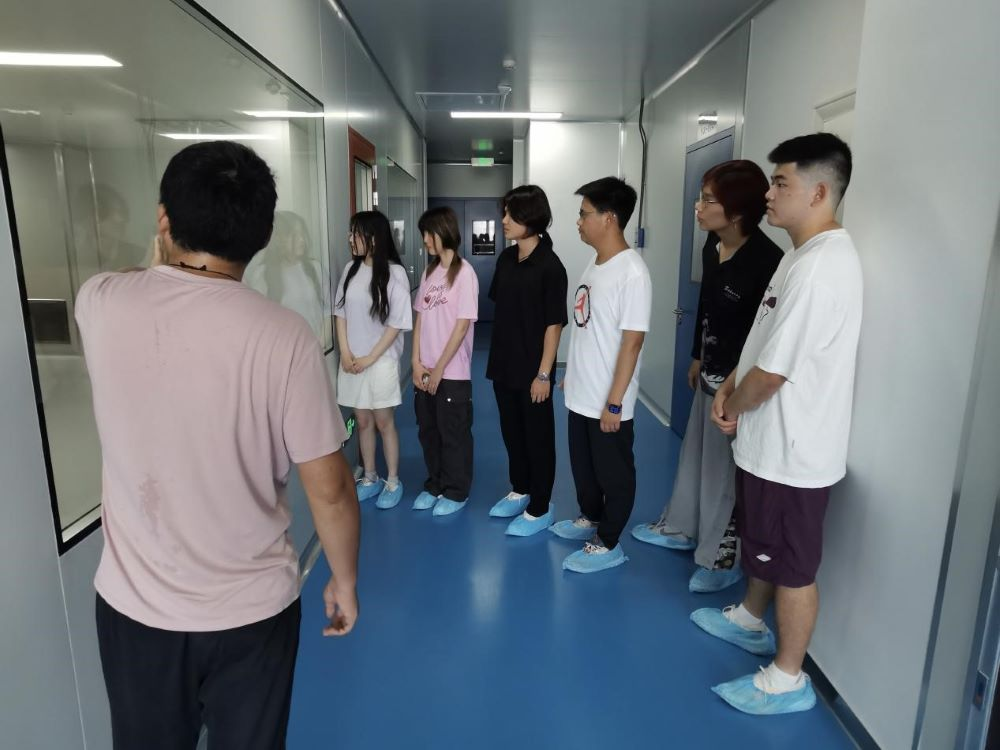
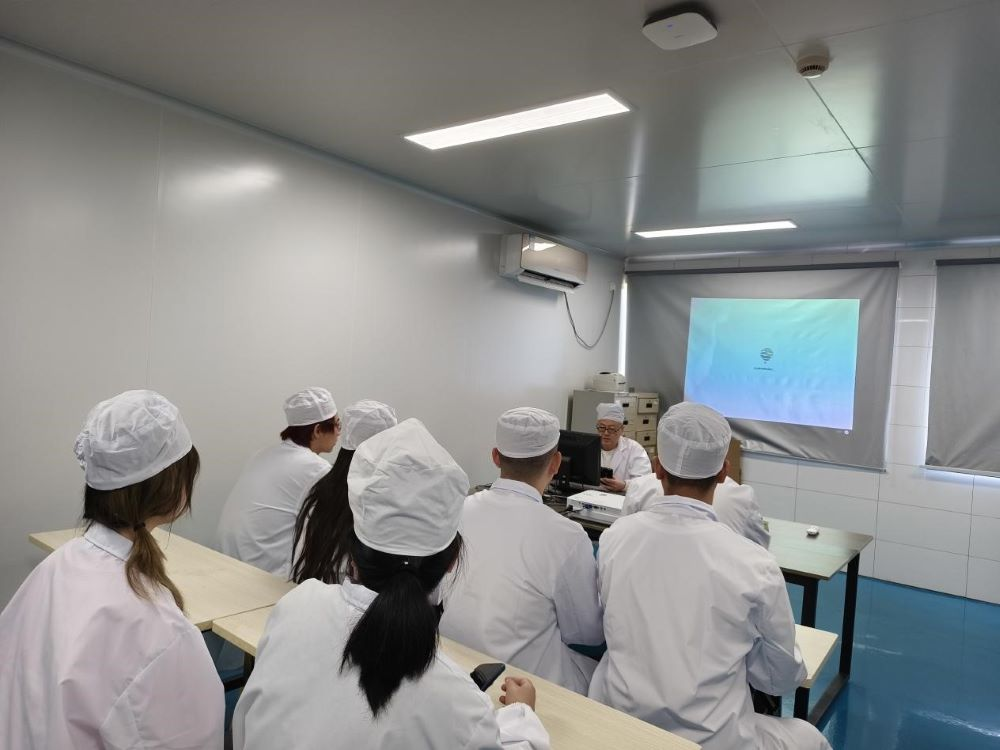

“击鼓催征稳驭舟，奋楫扬帆启新程。”为践行深入基层的思想理念，以饱满的青春热情感悟时代使命，展现新时代青年的青春力量。大连理工大学“紫韵・星火”实践团来到了浙江省兰溪市。
实践团从基层着手了解当地卫生状况，到达浙江的第一站便是兰溪市石埠村。车子一驶入村里，规划整齐的房屋与平整洁净的道路便映入眼帘。下车后，实践团分为三个小组各自展开当地医疗卫生层面的调研。在村口散步的爷爷、门前聊天的奶奶们、当地超市的老板……都成为了我们的调研对象。
通过热心的他们，实践团了解到当地的医疗卫生条件尚不完善，具体表现为：乡村内只有一所能够治疗常见轻微疾病的卫生所，对相对严重疾病的救治能力微弱；设施设备欠缺且医疗场地不足；卫生所对周边老人的卫生检查不足等。
科技创新、科创兴国是如今大势所趋。国家科技部、财政部印发的文件中也指出，要求“聚焦企业创新能力关键环节，突出问题导向，强化精准施策”。
“珍视明是一家专业从事眼科药品和眼健康消费品，集研发、生产和销售的企业。公司产品涵盖眼科药品和眼健康消费品。珍视明公司在研发上坚持自主研发， 荣获‘国家知识产权优势企业’称号，入选首批专精特新‘小巨人’企业， 拥有超过70项专利。珍视明拥有80余项产品，拥有滴眼液为主的药品批文50个。珍视明滴眼液、蒸汽眼罩、眼贴、洗眼液等产品，均占据品类市场领先地位。”珍视明的工作人员介绍道。
对于需要持续加大创新研发投入，加快推动产业升级转型的浙江来说，浙江康恩贝制药有限公司无疑起着龙头作用。
工作人员介绍说：“浙江康恩贝制药股份有限公司前身为兰溪市云山制药厂，经过逾五十年的发展，现已成长为一家集药物研发、生产、销售于一体，省内规模最大的中药企业，位列中国中药企业10强，入选国务院国有企业‘科改示范企业’。”
随后，实践团与工作人员在会议室进行了技术交流。当谈及公司对计算机类专业大学生的招聘要求时，工作人员告诉我们要重视编程的实践能力而不能局限于课程内容，同时也对我们进行了鼓励。
